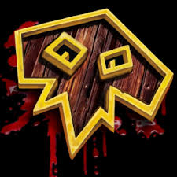

Best in Slot Gear for Season 1 Shadowlands (Patch 9.0)
| Click below to learn more about Restoration Shaman!
|
| Class Discussion |
Talents |
Back to Main Page |
In World of Warcraft, There is one Primary Stat (Agility, Intellect, or Strength - depending on specialization)
and four Secondary Stats(Critical Strike, Haste, Mastery, and Versatility) that can be customized to make your
character perform at different rates compared to others.
Primary Stat - Increases the magnitude of your spells and abilities.
Secondary Stats:
Critical Strike - Chance for extra effectiveness on your attack and heals.
Haste - Increases attack speed and spell casting speed.
Mastery - Increases healing from your spells by up to X (where X is depending on the rating), based on the current health of your target. Lower health targets are healed for more.
Versatility - Increases damage and healing done by X (where X is depending on the rating) and decreases damage taken by Y (where Y is is half of X).
For Restoration Shamans, the stat priority is the following:
Intellect > Haste to a breakpoint (Around 8-10%) > Critical Strike > Versatility > Mastery > Haste
With this Stat priority in mind, there are a variation of equipment items that can be utilized to customize. In order to better analyze and customize your character,
below you can import your character's current equipment and see what stats you have. Then you can select any equipment area and place a different item to see how it would differ!
|
|
| Head |
Hands |
| Neck |
Waist |
| Shoulders |
Legs |
| Back |
Feet |
| Chest |
Fingers |
| Wrist |
Trinkets |
| Weapon |
Shield |